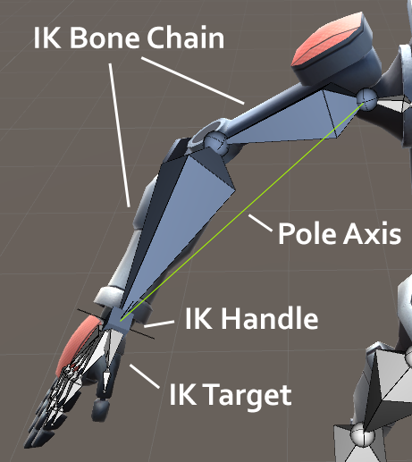
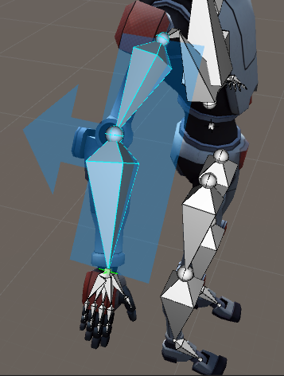
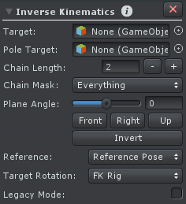

Inverse Kinematics Professional
There are 2 approaches on how to modify the orientation of bones in UMotion.
- The traditional forward kinematics approach lets you directly modify the orientation of every bone. This is a simple and straight-forward way to define poses. While animating you often have situations where you want to place e.g. a hand of the character at a certain position. To achieve this in forward kinematics it is necessary to rotate every bone of the arm until the hand is in the correct position. It is hard and time consuming to do a precise placement of the hand.
- Inverse kinematics allows modifying the end point of a bone chain directly. For example, the hand position can be modified directly and all bones of the arm are updated accordingly. This results not only in a faster workflow but it also enables new possibilities like sticking the hands to a world position.
Rig Layers
Most of the time it depends on the situation if forward kinematics or inverse kinematics is more suitable. UMotion allows you to seamlessly switch between both approaches during an animation. This is possible due to the so called rig layers:
There is one rig layer for forward kinematics and one for inverse kinematics. It's like the animated GameObject has two skeletons - one that is affected by forward kinematics and one that is affected by inverse kinematics. Each inverse kinematics constraint has a switch that can be used to smoothly blend between the two skeletons.
Explanation Of Terms
The IK handle is the joint/transform that has the Inverse Kinematics Constraint attached. It controls the rotation of a chain of bones whereby the end of the chain is the IK target.
The pole axis is the line between the start of the first bone in the IK chain to the start of the target bone.
Inverse Kinematics - Naming Definitions
Inverse Kinematics Goal
The IK constraint's goal is to rotate all bones of the chain in such a way, that the IK target's position is the same as the position of the IK handle. So by moving the IK handle in Pose Mode (all Constraints are disabled during Config Mode) the whole IK chain will update automatically.
The IK solver used by the IK constraint is a Rotate Plane Solver. This type of solver is incredible easy to use and produces robust results (no jitter, sudden bone movements). The algorithm projects the bone chain and the IK handle onto a 2D plane (shown in blue in the screenshot below) and applies the IK solving algorithm in 2D space. Elbows, knees, etc. are only bending in the direction the arrow of the IK plane is pointing to. The bone chain is then rotated in such a way that it points into the IK handle's direction thus making the IK target position match the IK handle's position.
Inverse Kinematics Plane
When configuring an IK constraint the IK plane should always point into the direction the elbow, knee, etc. should bend. The surface of the plane defines the space in which the bones will be bended or stretched by the IK algorithm.
The IK handle can't be a child of a joint/transform in its chain.
If the parent of the IK handle is set to be the hips, then for example, the hands will stay at the same place relative to the hips. If the parent is set to be the animated GameObject's root, then the hands won't move when the character's hips are moved. This way it is possible to pin the hands at a certain location (useful for climbing animations etc.).
Only one Inverse Kinematics Constraint can be added per joint/transform.
IK Pinning
The Child-Of Constraint can be used to extend the Inverse Kinematics Constraint with IK pinning functionality. When an IK handle is pinned, it keeps its current position even if the rest of the rig is moved. When an IK handle is not pinned it moves with the rest of the rig.
Setup
Inverse Kinematics Constraint - Setup
| UI Element | Description |
|---|---|
| Target | The joint/transform that should be controlled by the Inverse Kinematics Constraint. The inverse kinematics will try to find a way to rotate all bones in the chain so that the target joint/transform is at the same position as the joint/transform with the Inverse Kinematics Constraint attached. |
| Pole Target | An optional joint/transform can be added as pole target. By moving the pole target it is possible to rotate the whole IK chain around the pole axis whereby the arrow of the IK plane will always point towards the IK pole target. |
| Chain Length | The number of bones that should be affected by the Inverse Kinematics Constraint. Incrementing this number adds additional parents of the target joint/transform to the chain. |
| Chain Mask | The chain mask can be used to exclude certain bones within the chain from being affected by the IK solver. This is especially useful for excluding "twist" or "roll" bones. |
| Plane Angle | The angle of the plane at which the IK algorithm is applied in degrees. The plane should be rotated in such a way that it points into the direction where the knee, elbow, etc. should be bent. |
| Front / Right / Up | Sets the plane angle so that it points into the corresponding direction (seen from the animated GameObject). |
| Invert | Inverts the plane angle by rotating it 180 degrees. |
| Reference | Before the Inverse Kinematics Constraint is executed, all bones in its chain are reset to the reference pose. From there the Inverse Kinematics algorithm will try to find a way to rotate all bones in the chain so that the target joint/transform is at the same position as the IK handle. The reference pose has great influence on how natural the result of the inverse kinematics looks. The inverse kinematics will usually choose one of the shortest ways to rotate from the reference pose to the target position. Due to this fact the reference pose also somehow gives the algorithm the hint in which direction e.g. an elbow or knee should bend. If the elbow or knee is rotated in strange ways when the IK is applied it should be slightly bended in the reference pose. The reference for the IK constraint can either be the reference pose that was set in Config Mode or the current pose of the forward kinematics rig layer. The latter one is useful when you want to have different reference poses in different clips or in different situations during a clip. It gives you great control on the end result of the IK Constraint. |
| Target Rotation | The target joint/transform can either copy the rotation of the IK handle so that the rotation of the target can be changed by rotating the IK handle or by using the forward kinematics rotation. With the latter one you can rotate the IK target by selecting it in the Scene View and by using the rotation tool just as you would rotate any other bone in FK mode. |
| Legacy Mode | In UMotion V1.08 the IK solver was updated. The new IK solver produces better results especially in combination with IK pinning. Enabling the legacy mode will use the old IK solver (UMotion V1.07 and below). Projects that have been created in UMotion V1.07 and below use the legacy mode to ensure compatibility. For updating to the new IK solver disable the legacy mode. |
Animated Properties
| Property | Description |
|---|---|
| FK/IK Blend | As mentioned before, UMotion has a forward kinematics rig layer and an inverse kinematics rig layer. With this property you can smoothly adjust the influence of each rig layer on the mesh. 0 means the mesh will be 100% influenced by forward kinematics and 1 means the mesh will be 100% influenced by inverse kinematics. The property only affects the bone chain of the related Inverse Kinematics Constraint. If there are multiple Inverse Kinematics Constraints, blending has to be adjusted for each of them. A Custom Property Constraint can be used to control all blending properties together. |
| Pole Rotation | This is only visible when no Pole target was selected. It controls the rotation around the pole axis in degrees. |